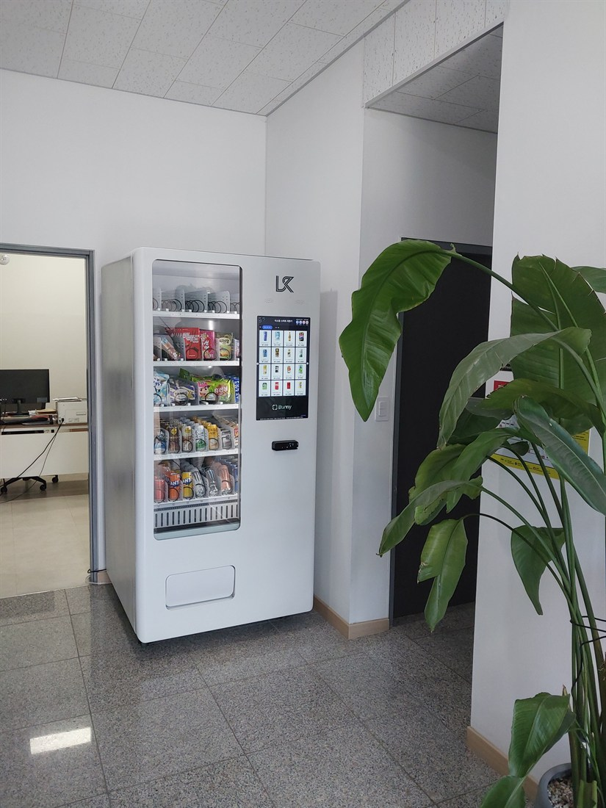

2026.08.27 · 대전
대전 스마트 무인자판기 설치 — 사무실·기관 로비 24시간 무인 판매

오늘은 대전의 한 사무실 건물 로비에 스마트 무인자판기를 설치했습니다. 직원과 방문객이 오가는 자리라, 화면에서 고르고 카드로 바로 결제하는 화면형 스마트 자판기로 세팅했습니다. 음료·스낵·컵라면을 한 대에 담아 매점 없이도 간단히 해결됩니다.
사무실·기관에 잘 맞는 이유 — 탕비실·휴게공간에 두면 직원 복지로도 좋고, 방문객 응대에도 요긴합니다. 인력 없이 24시간 운영되고 카드·간편결제라 관리가 편합니다.
대전에 설치한 스마트 자판기 구성
냉장자판기로 생수·이온음료·탄산·커피 음료를 시원하게, 과자·컵라면·간식을 더한 구성입니다. 카드·삼성페이·카카오페이·네이버페이·QR을 모두 받아 현금 없이 운영되고, 매출·재고는 원격으로 확인됩니다.
대전, 이런 곳에 잘 됩니다
대전은 둔산동 오피스·관공서, 유성 연구단지·대학가, 대덕테크노밸리 사무실·공장, 병원·학교, 은행동 원도심 상권까지 넓습니다. 사무실 자판기·기관 로비 스마트 자판기·직원전용 자판기 문의가 많습니다.
대전 서비스 지역 (동 단위 방문)
둔산동, 유성, 관저동, 노은, 도안, 은행동, 대덕테크노밸리까지 대전 전역(서·중·동·유성·대덕구)을 방문 설치합니다.
둔산동 무인자판기 설치 · 유성 스마트 자판기 설치 등
대전 무인사업, 이렇게 시작하세요
설치비는 무료입니다. 로비·휴게공간 동선에 맞춰 자리를 잡아 드리고, 반입·결제 연동까지 챙깁니다. 스마트 자판기 구입·구매도, 임대·렌탈도 가능합니다.
📞 대전 스마트 무인자판기 설치 상담 010-6832-1994